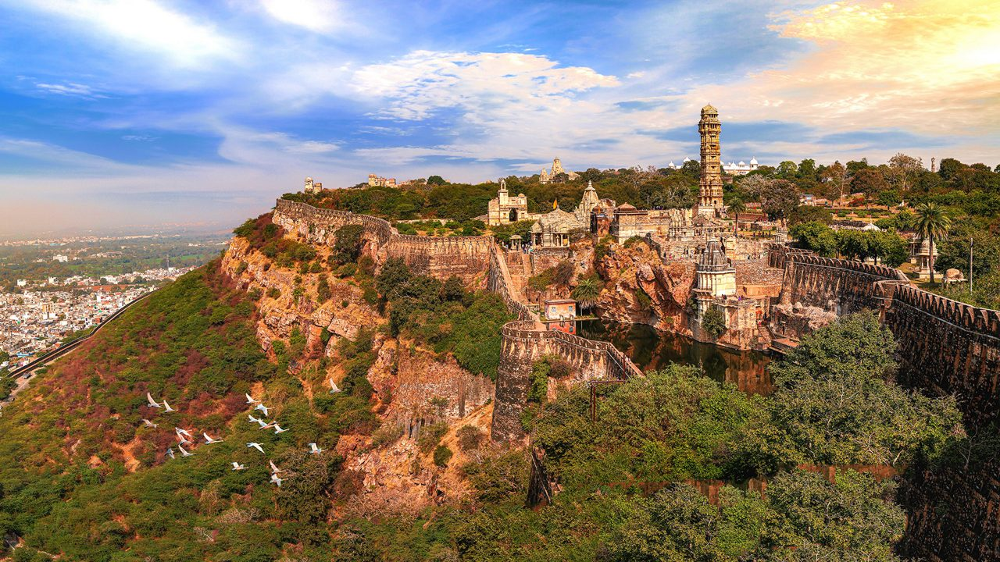
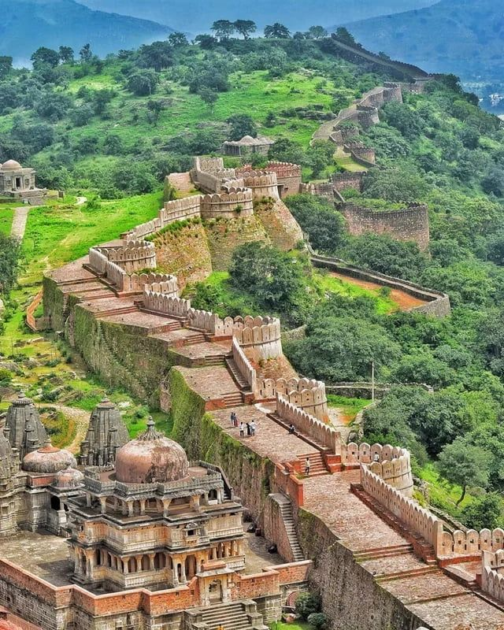
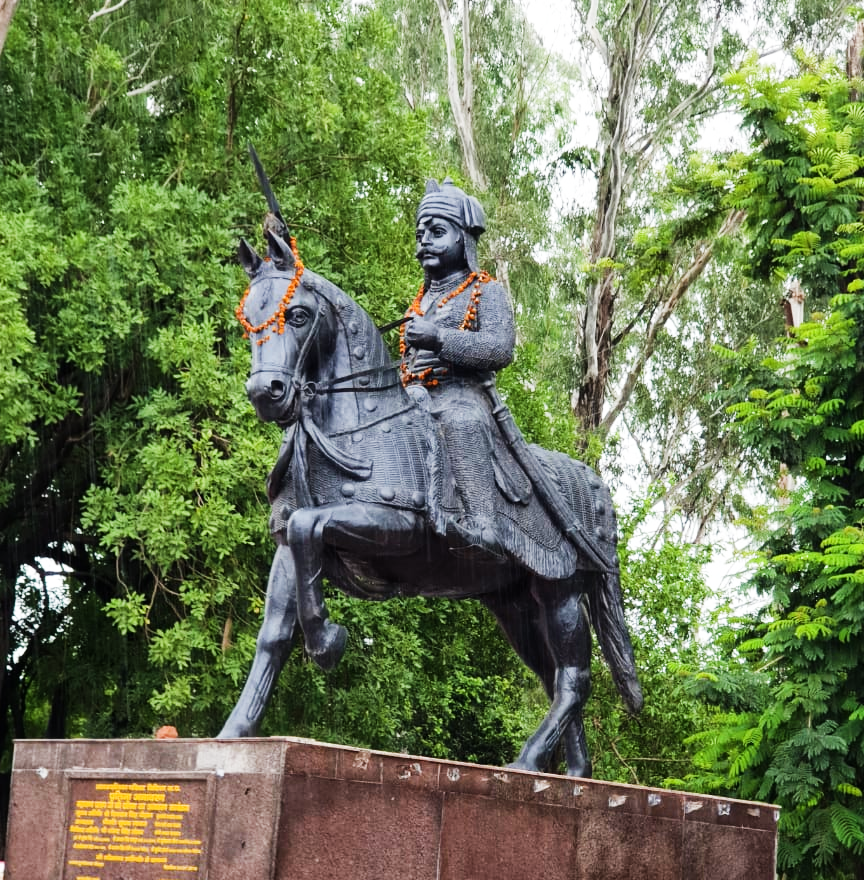

Sisodia Explorer
From the sun-scorched ramparts of Chittorgarh to the strategic heights of Kumbhalgarh, the Sisodias of Mewar forged a legacy of unyielding honour. Discover the dynasty that chose death before dishonour, and whose warriors still echo through the hills of Rajasthan.
The House of Chittorgarh, Defenders of Rajput Honour
The Sisodia dynasty — a branch of the Guhila lineage — rose to prominence in the rugged hills of Mewar (modern Rajasthan) and established Chittorgarh as its unshakeable citadel. Claiming descent from the Sun, the Sisodias ruled for over a millennium, earning renown as the only Rajput clan that never submitted to Mughal suzerainty, even after three devastating sieges of their capital.
From the legendary Maharana Pratap to the visionary Rana Kumbha, who built the formidable Kumbhalgarh Fort, the Sisodias embodied the Rajput ideals of valour, sacrifice, and unwavering loyalty to dharma. Their story is etched in the walls of Chittorgarh, the annals of Mughal chronicles, and the heart of every Rajput.
🏰 The Sisodia Legacy
- c. 7th Century – 1947 — Over a millennium of rule over Mewar.
- Capital at Chittorgarh — The unconquered fortress that became a symbol of Rajput pride.
- Never Submitted — The only Rajput dynasty to never accept Mughal vassalage.
- Kumbhalgarh Fort — The second-longest continuous wall in the world, built by Rana Kumbha.
Major Rulers of the Sisodia Line
From the founder of the citadel to the warrior who mounted Chetak at Haldighati — the Suryavanshi kings of Mewar.
Rana Kumbha (r. 1433–1468)
The visionary ruler who built Kumbhalgarh, expanded the fortifications of Chittorgarh, and patronised literature, music, and art. A scholar-king and a warrior.
Rana Sanga (r. 1509–1528)
A formidable warrior who united Rajput clans against the Mughals and fought the Battle of Khanwa. His valour earned him the respect of both allies and adversaries.
Maharana Pratap (r. 1572–1597)
The most iconic Sisodia ruler, who never accepted Mughal supremacy. His legendary stand at the Battle of Haldighati, mounted on his horse Chetak, is the stuff of Rajput legend.
Maharana Udai Singh II (r. 1537–1572)
Founder of Udaipur, who established a new capital after the fall of Chittorgarh. His reign marked a turning point in Sisodia history.
Maharana Amar Singh I (r. 1597–1620)
Continued the fight against the Mughals and eventually signed a peace treaty with Jahangir, securing Mewar's autonomy under honourable terms.
Maharana Raj Singh I (r. 1652–1680)
Defended Mewar against Aurangzeb's ambitions and restored several Hindu temples that had been desecrated, reaffirming the dynasty's role as a protector of dharma.
⚔️ Forts and Battles of the Sisodias
- Chittorgarh Fort: The unconquered hill-fort that withstood three legendary sieges — 1303, 1535, and 1567 — each marked by jauhar and sacrifice.
- Kumbhalgarh Fort: Built by Rana Kumbha, its 36-km-long wall is the second longest in the world, a testament to Sisodia military engineering.
- Haldighati (1576): The iconic battle where Maharana Pratap fought the Mughal forces of Akbar, immortalised in Rajput folk memory.
- Guerrilla Warfare: The Sisodias perfected mountain warfare, using the Aravalli hills to harry invading armies and protect their homeland.
Chittorgarh, Kumbhalgarh and the Sword of Mewar
Chittorgarh — the "Hill of Chittrang" — was not merely a fort but a living symbol of Sisodia identity. It fell thrice to overwhelming forces, and each time the Sisodias chose the fiery path of jauhar over submission, with the women immolating themselves and the men riding out to embrace death in battle. The fort still stands today, its walls whispering tales of honour that refuse to fade.
Kumbhalgarh, built by the warrior-scholar Rana Kumbha, remains the dynasty's greatest architectural legacy — a fortress so vast that it could shelter the entire population of Mewar in times of war. The Sisodias understood that true power lay not in conquest alone, but in the unbreakable will to protect their land, their faith, and their honour.
Timeline of the Sisodia Dynasty
From the founding of Chittorgarh to the integration of Mewar into the Indian Union — a millennium of unbroken history.
Origins of the Guhilas
The Guhila dynasty, from which the Sisodias descend, establishes its rule in the Mewar region with Nagda as its early capital.
Foundation of Chittorgarh
The Guhila ruler Bappa Rawal captures Chittorgarh from the Mori rulers, establishing it as the Sisodia capital for centuries to come.
First Siege of Chittorgarh
Alauddin Khalji's forces capture Chittorgarh after a prolonged siege. Rani Padmini and the women of the fort commit jauhar, while the men ride out to their deaths.
Rana Kumbha's Golden Era
Rana Kumbha builds Kumbhalgarh, the 36-km-long fortress wall, and patronises the arts, music, and literature — a high point of Sisodia rule.
Battle of Khanwa
Rana Sanga leads a confederacy of Rajput kings against the Mughal emperor Babur. Though defeated, his valour earns lasting renown.
Third Siege of Chittorgarh
Akbar's forces capture Chittorgarh after a four-month siege. Maharana Udai Singh II establishes a new capital at Udaipur.
Battle of Haldighati
Maharana Pratap fights the Mughal forces under Man Singh. Though tactically inconclusive, the battle becomes a symbol of Rajput defiance.
Integration into India
Maharana Bhupal Singh signs the Instrument of Accession, merging Mewar into the Indian Union, bringing the dynasty's sovereign rule to a close.
Forts, Battles and Legends of the Sisodias
A glimpse at the monuments, landscapes and icons that define the Sisodia dynasty's enduring legacy.




📚 References & Further Reading
- Tod, James (1829). Annals and Antiquities of Rajasthan, Vol. I & II. Oxford University Press (reprint).
- Somani, Ram Vallabh (1976). History of Mewar, from Earliest Times to 1751 A.D. Mateshwari Publications.
- Sharma, Dasharatha (1962). Rajasthan Through the Ages, Vol. I. Rajasthan State Archives.
- Bhargava, Visheshwar Sarup (1956). Maharana Pratap — The Great Patriot. Hindi Sahitya Mandir.
- ASI (Archaeological Survey of India). Monument records: Chittorgarh Fort, Kumbhalgarh Fort, and Haldighati Memorial.